지역
전남광주 햇빛소득마을 126곳 중 즉시 접속 5곳
내년 예산 73억2,000만 원으로 100곳을 지원한다. 신민호 특별시의원은 11월 24일 예산 심사에서 출자자 쏠림을 막을 수익배분 기준을 요구했다.

도봉구 태양광 설치비 지원 수요조사, 12월 11일 마감
2028년 국비 공모 사업으로 설치비의 70~80%를 지원한다. 주택·아파트·상가 소유자가 신청하며 세입자는 신청할 수 없다.
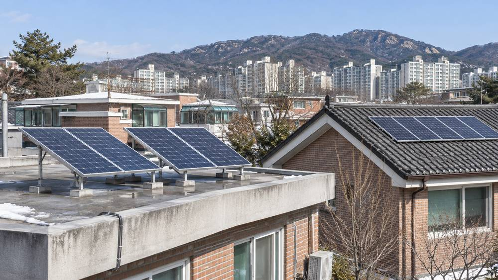
전남광주 융복합 국비 275억, 내년 1만1,300곳 보급
2027년 26개 시군구 주택·건물에 태양광 3만6,891㎾ 등을 놓는다. 총사업비 982억 원 가운데 민간 부담은 156억 원이다.

경기 햇빛자립마을 내년 예산 5분의 1로 줄어
햇빛자립마을 도비가 128억3,700만 원에서 25억4,300만 원으로 줄고 도시가스·LPG 지원은 빠졌다. 도의회는 12월 11일 본회의에서 예산안을 심의한다.
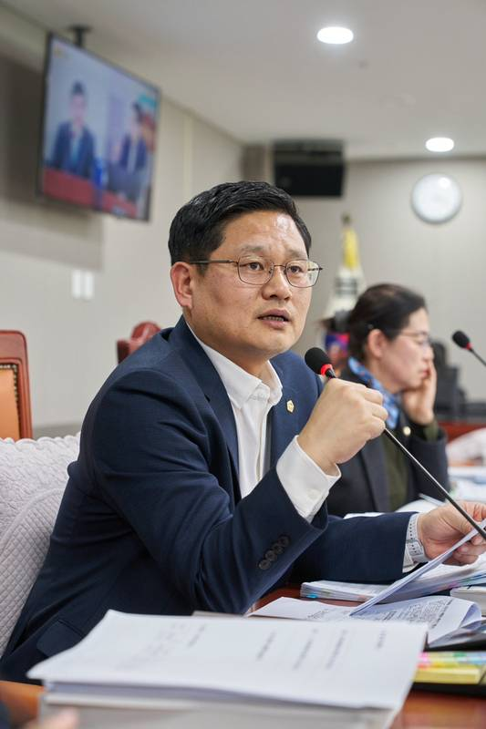
시흥 바이오가스 239%, 남은 실적 팔아 1억700만 원
하수 찌꺼기 등 하루 745톤으로 886만Nm³를 만들었다. 남은 초과 실적 358만Nm³는 2027년 1월 20일까지 다른 공공 생산자와 직접 거래한다.
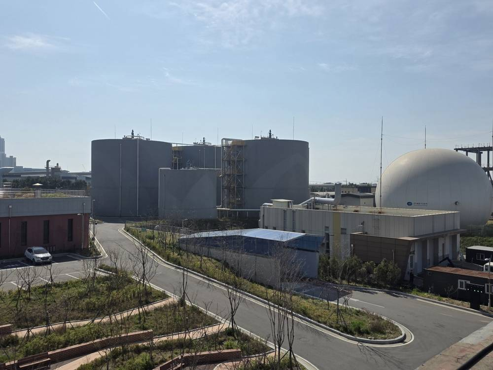
함평 재생에너지 이격거리 조례안, 태양광 주택 200m
함평군의회가 태양광 200m·풍력 1,500m로 시행령 상한까지 정한 조례안을 예고했다. 주민참여형과 공모사업은 빼고, 의견은 11월 23일까지 받는다.
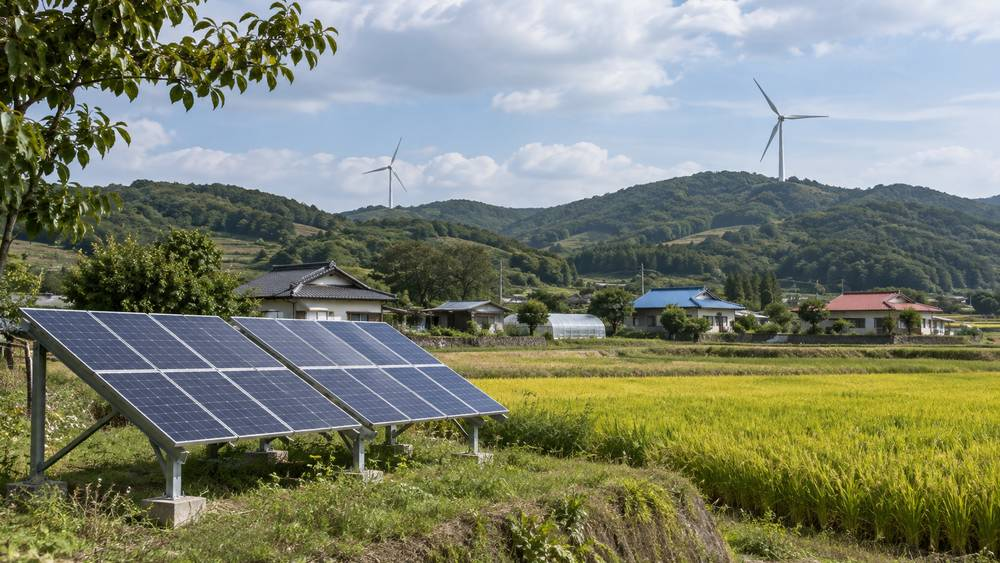
군산 베란다 태양광, 세입자도 12월 10일까지 신청
군산시가 500W 설비 100만 원 가운데 80만 원을 지원하는 가정형 태양광 신청을 12월 10일까지 늘렸다. 아파트는 단지 단위로 한꺼번에 신청할 수 있다.
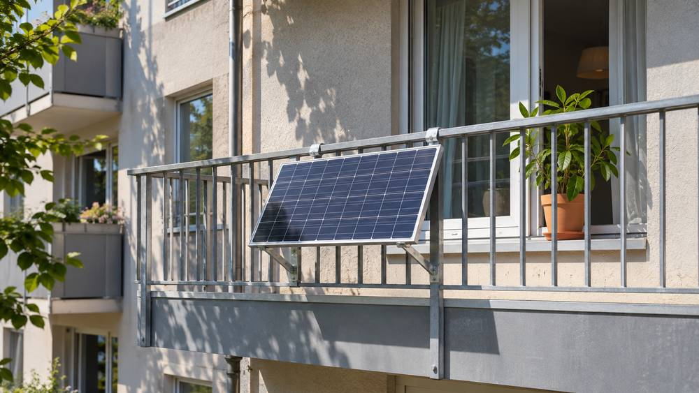
괴산 탄소중립위원회, 기후위기대응위원회로 이름 바꾼다
괴산군이 11월 20일 기본 조례 개정안을 입법예고했다. 위원 10명 이내·위원장 부군수 구성은 그대로이고, 의견은 12월 10일까지 환경과에 낸다.
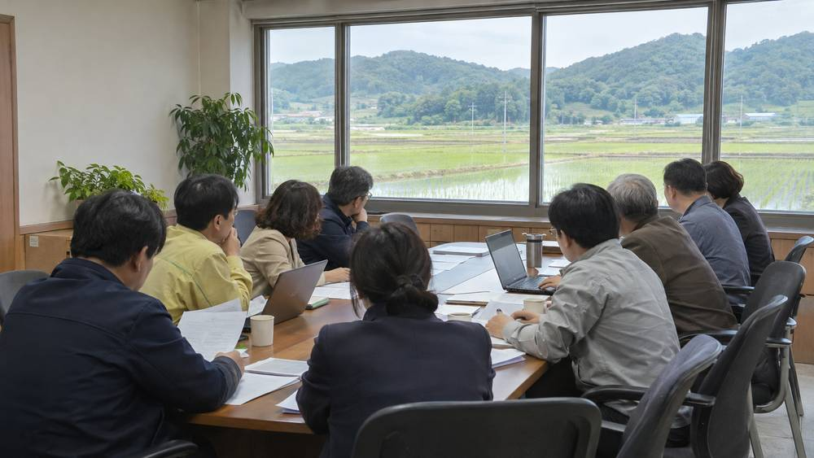
화목보일러 산불 막는다, 충주·진천 산림 옆 가구 점검
중부지방산림청과 충주국유림관리소가 산림 인접 마을의 화목보일러 사용 가구를 찾아가 연통·소화기·재 처리를 본다. 가을철 산불조심기간은 12월 15일까지다.
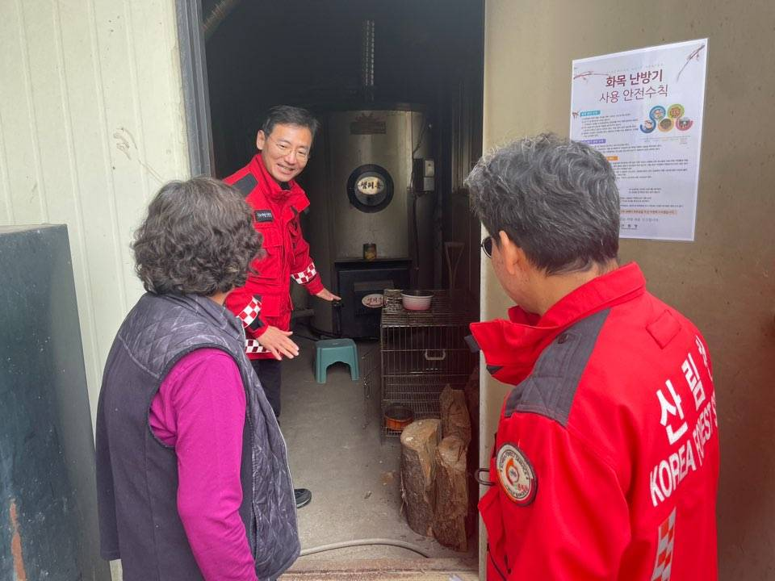
제주 히카마 노지 재배, 꽃 따니 덩이뿌리 1,066g
제주도 동부농업기술센터가 5~10월 밭 700㎡에서 길러 봤다. 꽃을 딴 구역의 상품률이 68.8%로 가장 높았고, 잎·줄기·씨앗에는 독성이 있다.
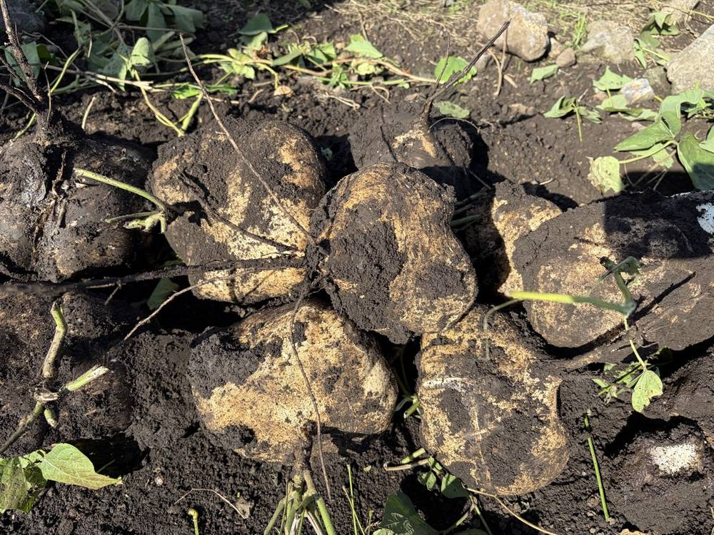
경기 도시재생 거점시설 3곳 준공, 수원·포천·평택
수원 세류 어울림센터·포천 관인1+센터·평택 신평 다가치 커뮤니티센터가 11월 문을 열고, 연천 전곡 컬처스테이션은 2028년 10월 준공을 목표로 착공한다.

수원·오산 노후 임대아파트 1,622세대 전기·소방 점검
경기도와 한국전기안전공사·소방서가 11월 18~25일 주공아파트 3개 단지 집 안을 본다. 필요하면 누전차단기를 바꿔 주고 2027년부터 정기 점검으로 잇는다.
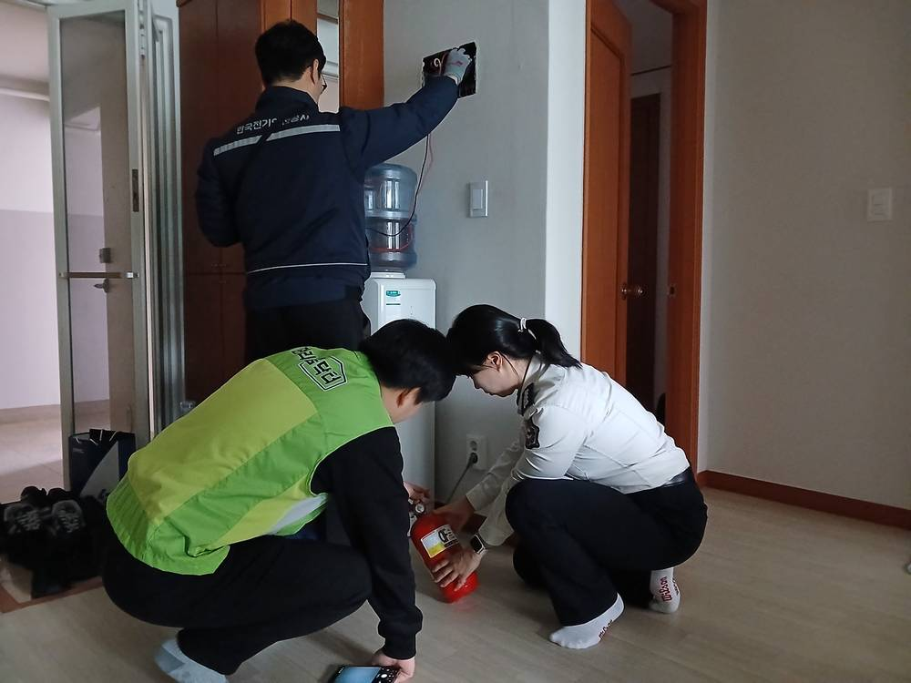
전기버스 화재 대응, 경기 소방관 62명 실습 교육
경기도기술학교가 11월 17일 양평소방서에서 고전압 차단·회생제동 해제를 실습시켰다. 7월부터 전기차 화재 피해는 한 사고에 최대 150억 원까지 보상한다.

제주 폭염 기후보험, 지급 저조에 12월 5일까지 설문
공공 건설현장 일용노동자가 폭염으로 일을 멈추면 시간당 1만7,210원을 주는 보험이다. 제주도는 설문 결과를 2027년 지급조건 개선에 반영한다.

공중케이블 정비, 인구 50만 이하 기초단체 10곳 공모
과기정통부가 12월 4일까지 2027년 정비사업 참여 기초자치단체를 모집한다. 뽑히면 한전·통신사 부담으로 지역마다 20억 원어치 전선을 정리한다.
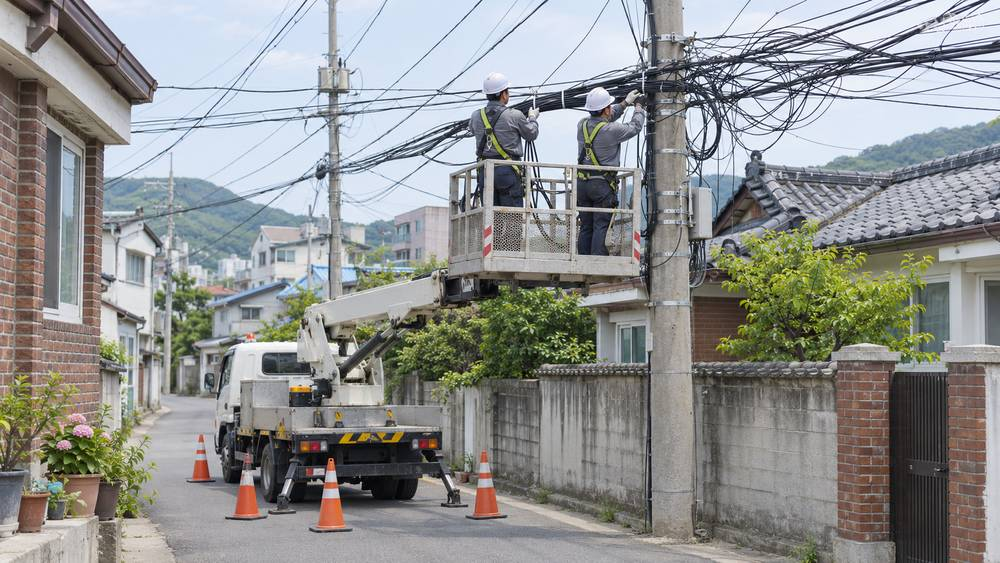
양평 강하·강상 도시가스, 국지도 88호선과 병행 검토
경기도의회·경기도·코원에너지서비스가 19일 16.8㎞ 도로공사 구간의 배관 매설을 논의했다. 수급기지 신설안은 약 1,000억 원, 협의에 6~7년이 걸린다.
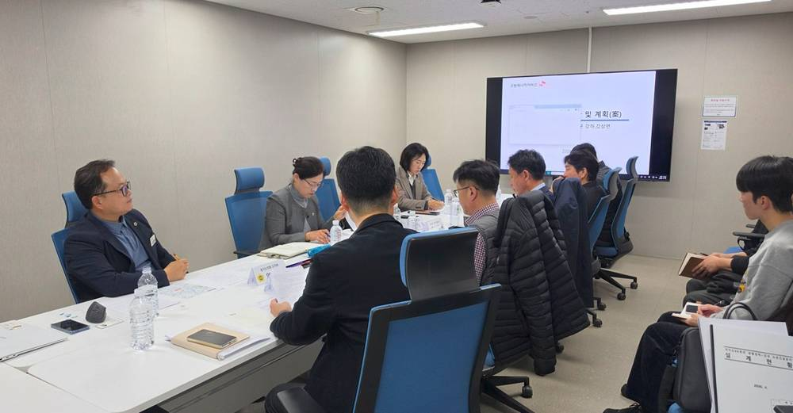
경남 채소화훼연구소 전기요금 72% 올라 식물공장 멈춰
연구소 산업용(을) 단가가 kWh당 105.5원에서 181.9원으로 오를 때 운영비는 7.3% 줄었다. 경남도의회가 19일 추경 심사에서 따졌다.

울진 한수원 지원사업 9%대 남아, 학습보조비도 점검
울진 한수원 지원사업은 2025년 약 20억9,000만 원 중 1억9,000만 원을 못 썼다. 경북도의회는 사용처 한정과 울진군 중복사업 점검을 주문했다.
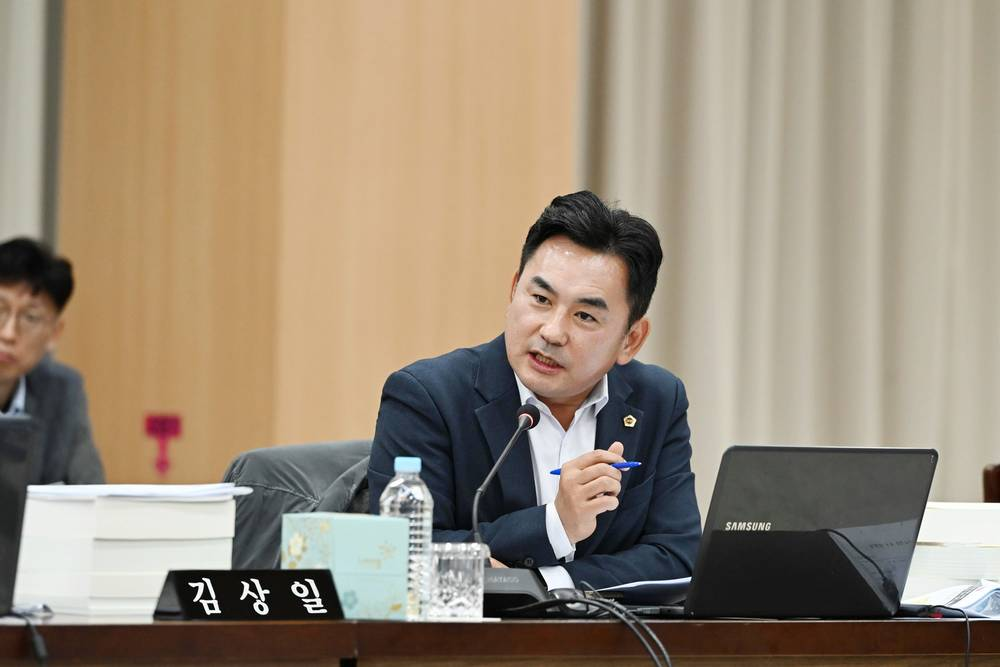
경북 햇빛소득마을 지연, 도의회 행감서 사업성 점검 주문
경상북도의회 기획경제위가 17일 감사에서 국공유지·계통 문제와 북부권 도시가스 공사 중단 피해 4억4,000만 원, 포항 바이오매스 재추진을 따졌다.
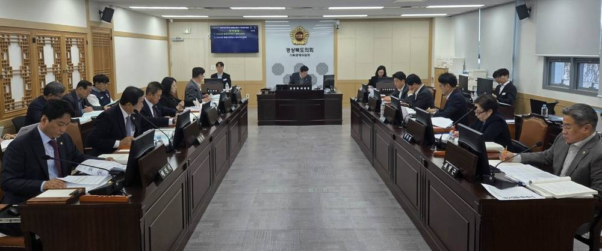
용인 시민 햇빛펀드 수익 환원, 시의회 행감서 점검 주문
용인특례시의회 경제환경위가 18일 감사에서 태양광 허가 자진 반납과 고령층 투자 피해, 중단된 에너지자립마을, 공영주차장 태양광 의무 설치를 따졌다.
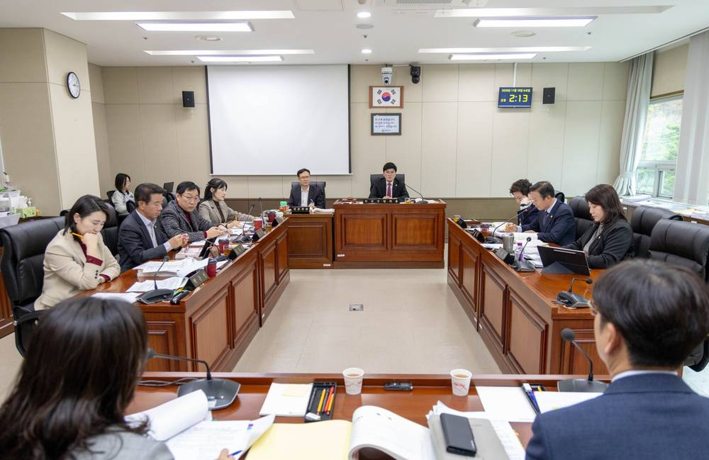
경기 이익공유형 태양광 멈춤, 도의회 재개 계획 요구
경기도의회는 17일 감사에서 대표 사임 등으로 멈춘 광주 1MW 시범사업, 연말 문 닫는 기후행동 앱, 에코팜랜드 RE100 태양광 예산을 따졌다.
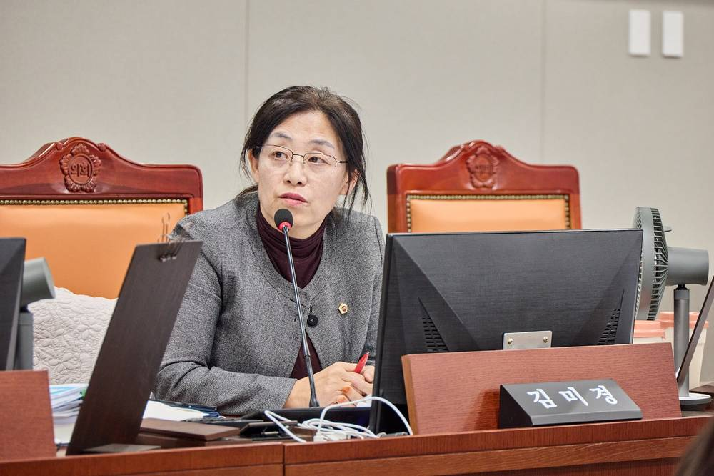
서남권투자공사 법안, 주민·지역 조합도 출자 길 연다
안도걸 의원 등 10명이 낸 제정안으로, 정부·산업은행 등이 자본금 5조 원 공사를 세우고 서남권 주민·조합 출자와 배당 공개를 정했다. 공포 1년 뒤 시행.

청주 하수처리장 바이오가스로 넉 달 새 수소 2만6,801kg…하루 370톤 통합바이오가스화시설도 추진
5월 가동한 청정수소 시설 월 생산량 2,529kg→8,316kg / 1,735억 원 민간투자 통합시설은 처리장 부지 지하에, 하수처리수 하루 3만4,800톤은 공업용수로
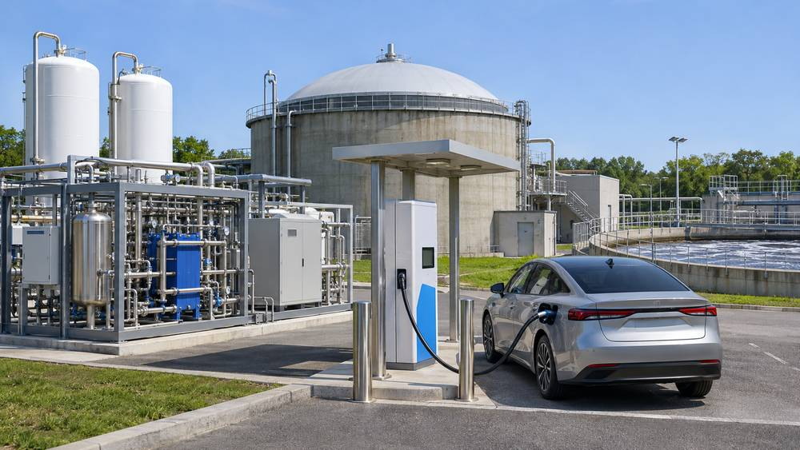
충남 탈석탄·정의로운 전환, COP31서 경험 발표
충남도가 11월 11~18일 튀르키예 안탈리아에서 석탄화력 3기 폐지와 전환기금 사례를 알렸다. 지원 특별법은 2027년 9월 16일 시행된다.

울산시 2027~2031년 기후위기 적응대책안 6개 부문 20개 과제…24일 시민설명회서 의견 받는다
회야댐 홍수조절·폭염 취약계층 보호 등 핵심사업, 세부사업 총계는 74개 / 부문별 사업 수를 더하면 73개…시 "협의 중이라 바뀔 수 있다"
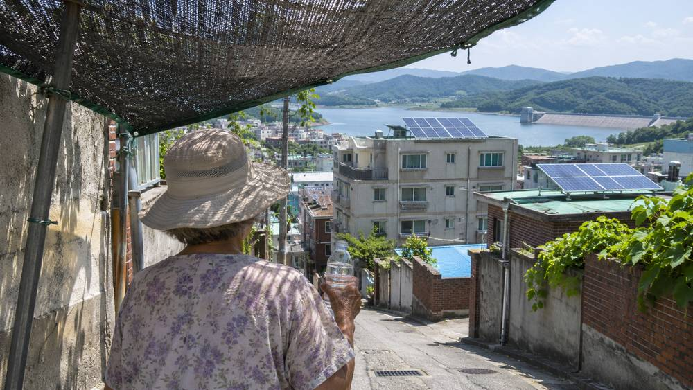
대구시, 7개 구·군 531곳에 태양광·지열 1,850㎾…총사업비 약 34억 원
2027년 재생에너지 융복합지원사업 선정, 국비 8억3,000만 원 / 9개 구·군 가운데 남구·달성군은 이번 컨소시엄에 없어

충남소방, 배터리시설 화재안전 등급제 연구 마쳐…위험 수준별 예방관리 검토
11월 18일 최종보고회, 목원대 산학협력단 4개월 연구 / 8월 당진 배터리 공장 화재로 리튬이온배터리 약 15톤 소실
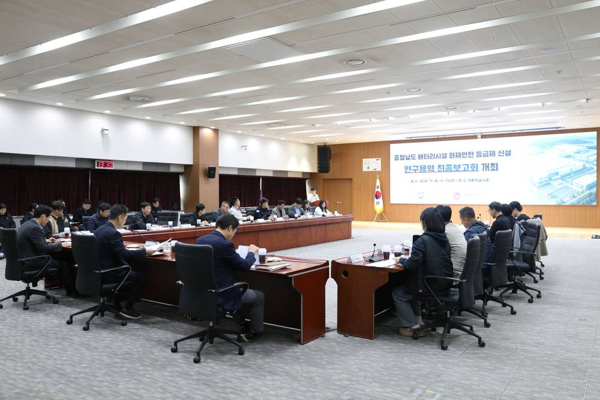
수원 권선1동 공영주차장, 옥상 주차면 지붕에 44.64kW 태양광
옛 행정복지센터 부지에 지상 5층·122대 규모, 사업비 67억 원 / 전기요금 연 약 1,200만 원 절감 추산…23일부터 무료 시범운영
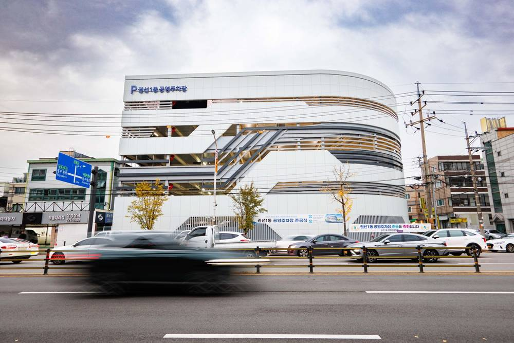
강원 기후변화 대응 복합센터 춘천에 개관, 한국기후변화연구원은 9월 먼저 입주
총사업비 175억 원 중 105억 원은 한강수계관리기금…연면적 3,154㎡에 기후변화도서관·창업보육·연구시설 / 2025년 3월 착공, 2026년 8월 말 건축공사 마쳐

인천 영종구, 내년 227곳에 태양광·태양열·지열 보급…총사업비 41억9,000만 원
2027년 재생에너지 융복합지원사업 A등급 선정, 국비 16억5,000만 원 / 올해 기준 주택 태양광 3kW 주민 부담은 설치비의 18%

해남군의회·농민단체, 신해남-신강진 345kV 송전선로보다 지역 소비 체계 먼저 요구
36.8km 가운데 29.2km·철탑 79기가 해남 통과, 2030년 12월 준공 목표 / 재생에너지자립도시 특별법 제정·RE100 국가산단 지정을 앞세워야
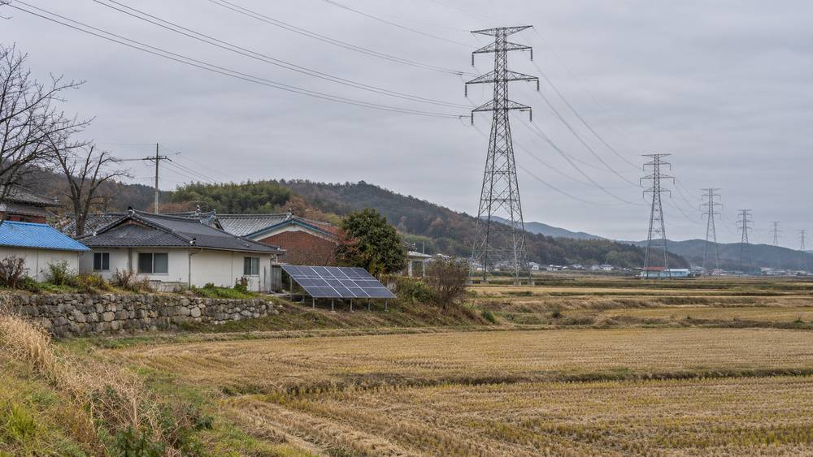
충남도, 수출 중소기업 탄소 배출량 산정·검증 돕는 전담조직 가동…철강·알루미늄부터
행정부지사 단장, 행정·기업·측정보고검증·정책자문 4개 분야 / 유럽연합 탄소국경조정제도 올해 1월 본격 시행, 12월까지 도 지원 전략

한울원전 지하수 관측정서 삼중수소 리터당 3만 베크렐, 원자력안전위원회 사건조사 착수
취수구 해수는 117베크렐 수준, 제한구역 밖 해수에선 안 나와 / 한수원, 액체 방사성폐기물 배출 배관 손상 추정

대전시, 에너지기술연구원·한전KDN과 분산에너지 협약…ESS·가상발전소로 지역 전력 수급 안정 추진
17일 대전컨벤션센터 태양광 포럼에서 업무협약, 시는 대상지 발굴·행정 지원 맡아, 250여 명 참석

영광 월평마을 등 영농형 태양광 계통 접속 지연, 전남광주시의회 서영광변전소 준공 앞당기라 요구
에너지산업본부는 한전과 준공 시기를 협의하고, 햇빛소득마을에 에너지저장장치와 가상발전소를 잇는 컨설팅을 서두르기로 했다

대전 한밭종합운동장 공영주차장 태양광, 서류마다 사업비·용량 달라 시의회 감사서 지적
박은희 시의원, 시설관리공단 감사에서 총사업비 6억 원 기준 서류 불일치 짚어…국비 공모에 뽑히고도 지방비가 모자라 포기한 이력
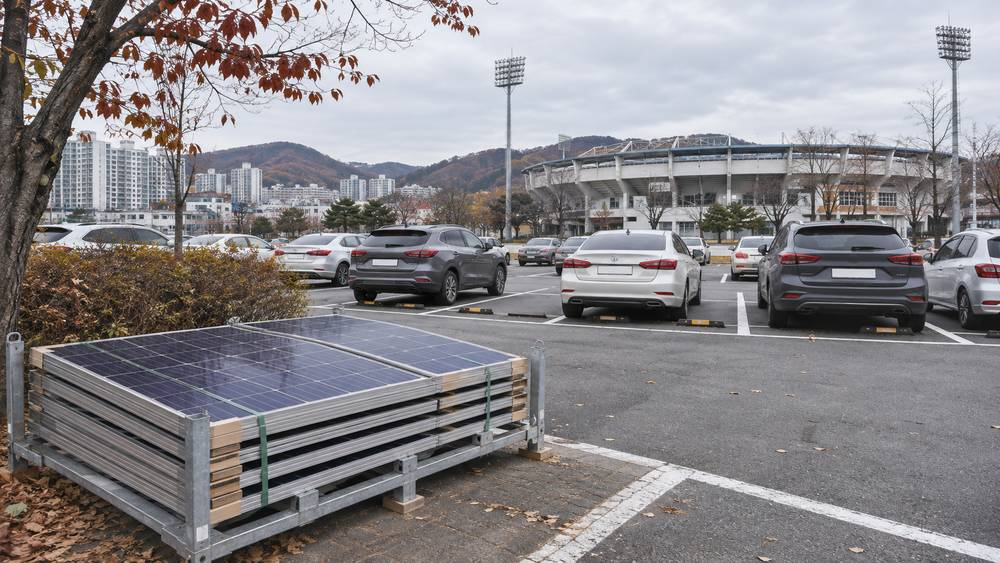
울주군 구영공원 주차장 태양광 11월 17일 착공 예정, 20m 앞 아파트 주민은 철회 요구
군은 반사율 5.3% 패널과 기울기 9도를 내세우고, 주민은 일부 패널 제외와 방현 유리 적용을 요구

여수시, 태양광 주택 이격거리 300m에서 200m로 줄이는 조례안 상임위 통과
도로 이격 100m 제한은 없애고 풍력 기준은 그대로 둔다, 시행령 상한 200m에 맞춰 11월 17일 본회의 의결 예정

김해시의회 태양광 시민토론회, 공영주차장·학교·산단 설치 가능 부지 조사 제안
11월 16일 토론회서 수익 지역 환원·주민참여·안전 유지관리 기준 논의, 발제자는 김해 주차장 태양광 잠재량이 경남 2위라고 밝혀

전북도, 농업기술원 종합감사서 12건 처분…영농형 태양광 설비에 농지 일시사용 협의 빠뜨려
2023년 농업진흥구역에 세운 384㎡ 설비, 개발행위허가도 없어…외부 강의 미신고 등으로 219만5,000원 회수
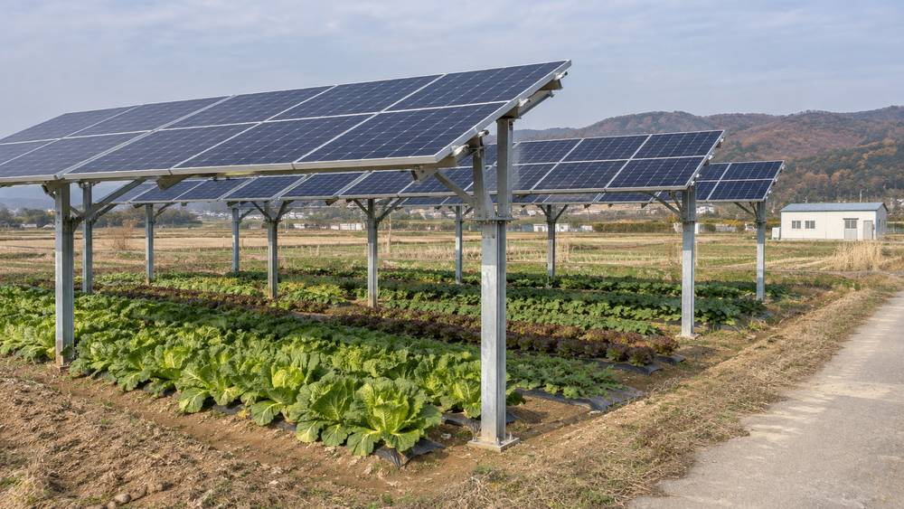
안성시 공유부지 주민참여형 태양광, 시장·군수·구청장협의회장상 받아
참좋은 지방자치 정책대회에서 수상…협동조합 선정 때 마을 주민 참여 비율과 수익의 마을복지 환원 계획을 평가
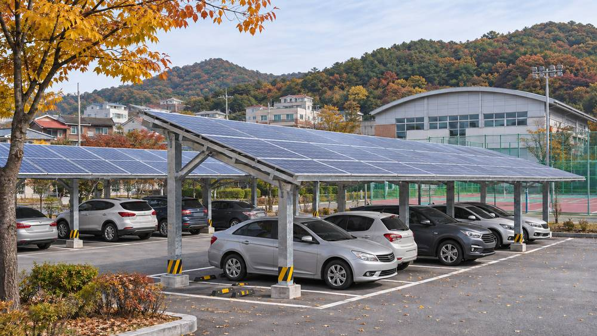


음성군 공영주차장 태양광, 사업비는 충북솔라링크가 조달해 군 부담 줄인다
11월 10일 한전KDN·충북개발공사·음성군 업무합의, 발전 수익은 에너지 취약계층 지원과 주민 복지에

휴니미항 913 kW 주차장 태양광 가동, 설치비 없이 20년 전력 계약
연 140만 kWh 이상 생산해 250가구 사용량 채워…항만 운영 2030년 무배출 목표 사업

울산 문무바람 개발사 헥시콘, 25일 청산 여부 주주총회에서 결정
이사회는 영업 계속을 우선 제안했지만 영업 자금 조달 능력에 중대한 불확실성을 적었고, 감사인 KPMG는 의견을 표명하지 않았다
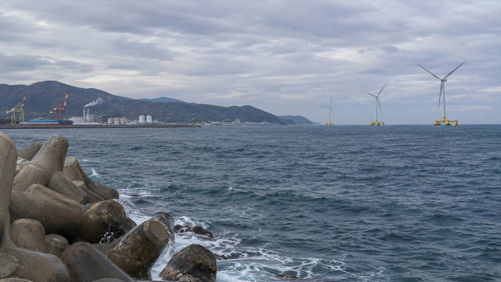

인천시장, 오스테드 대표단 접견…어민은 협의체 종료 뒤 연락이 끊겼다고 반발
2023년 발전사업 허가를 받은 인천해상풍력 1·2호, 시 전담 인력은 3명이며 시는 구체적 논의가 없었다고 설명


케손시 태양광 58.55MW로 73% 늘었지만 지붕 태양광 보급률은 1% 아래
시청에서 공립학교·시립병원으로 넓힌 설치, 위성 분석이 추정한 지붕 잠재량은 최대 4,916MW

호주 오스그리드, 시드니·센트럴코스트 세 곳 태양광·배터리 접속 여유 지도 공개
공동체 전력망 시범 두 곳과 캐링바 포함, 세입자·아파트 주민 몫 태양광 확대 뒷받침

뉴욕시 공공 재생에너지 개발공사 설립 제안…배터리 200MW로 연 1억 7,000만 달러 절감 추산
기후·공동체연구소 등 3개 단체가 10월 28일 보고서 공개, 학교·병원·공공주택 부지에 배터리·태양광·열에너지 네트워크를 직접 개발하고 초기 출자금 1억 달러는 뉴욕주에 요청하자고 권고

독일 쾰른 오센도르프 435가구에 지붕 태양광 전기 공급…지역 기본공급 요금보다 18% 싸게
협동조합 두 곳이 건물 55동 지붕에 태양광 750kW와 저장장치 670kWh를 설치하고 9월 15일 개소식, 전 건물 가동은 연말까지


일본 농림수산성, 영농형 태양광 기본방침 고쳐 차광률 30% 미만·연 판매 50만 엔 조건 넣었다
2023년도 말 설비 농지 5,167건 중 1,221건(24%)이 영농에 지장…규슈 누적 허가는 5년 새 4.4배

소보바 부족 소방서, 태양광에 바나듐 흐름전지 더해 정전 때 최소 10시간 전기 공급
산불 위험 최고 등급 구역서 24시간 넘는 정전 겪어…0.5 MWh 저장 설비 인계

콜로라도 플러그인 태양광 비영리단체 출범, 주 법은 전력사의 설치 전 승인 요구를 금지
출력 1,920와트 이하 장치 대상, 2027년 1월 1일부터 부당한 설치 금지 제한 적용

이스트본 전역으로 넓힌 BHESCo 태양광 사업, 초기 비용 없이 설치
주택 소유자·세입자·사업장 대상, 25년 전력구매계약에 현 공급사보다 최대 25% 낮은 요금 안내


맨발 대학 설립자 벙커 로이 별세, 향년 81세
1972년 인도 틸로니아에 센터를 세워 시골 여성에게 태양광 설치·정비 교육, 2016년 본인 기고 기준 78개국 800여 명 훈련

코크 북부 메리온코트, 이웃과 지붕 태양광 공동구매 나서…먼저 한 뉴타운코트는 가구당 한 해 1,000유로 절감
뉴타운코트에서는 25가구가 패널 8장 2,100유로, 6장 1,900유로로 참여해 설치…자원봉사 모임 노스사이드 솔라의 다음 대상은 몬트노트파크

묀제 의회, 풍력 수익 재단 설립에 근소한 다수로 찬성…운영위원회 동수 구성을 정관에 넣는 조건
사업자 서한에는 사업자 2명·정치인 2명 동수, 정관 초안에는 시장 당연직과 위원 5~13명뿐…1년 전 재단 방식을 배제한 결정은 뒤집혀

일본 사카타 영농형 태양광 심포지엄, 논 위 패널 670장 아래서 쌀 기르는 농민 사례 소개
일본 농지 일시 전용 허가 2022년도까지 누적 5,351건…한국 영농형 태양광 법은 12월 시행 예정


대전시, 17일 세계태양광총회 특별세션 포럼…에너지연·한전KDN과 분산에너지 협약 예정
2부 '태양광의 가치를 지역과 나누다'에서 에너지자립마을·산업단지 지붕 태양광 사례 발표 / 대전 전력자립률 1.87%(2021년)